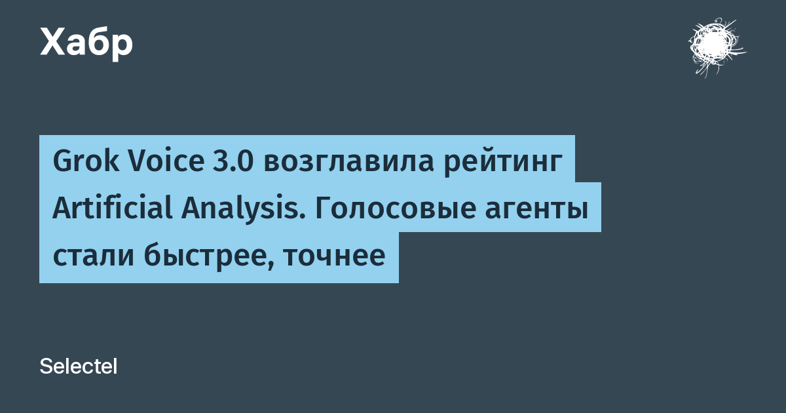

В независимом тесте Artificial Analysis Grok Voice 3.0 получила 86,9 балла в Speech-to-Speech Index — выше, чем GPT-Live-1 (83,2), Gemini 3.8 Live (82,6) и собственная Grok Voice 2.0 (81,3). Индекс складывается из рассуждений на слух, результатов теста support-звонков τ-Voice и успешности задач по слепым живым «дуэлям» с агентами. Ещё модель показала 97% в Full Duplex Bench — это паузы, перебивания и очерёдность реплик, то есть ровно то, по чему голосового робота обычно и распознаёшь.
На τ-Voice — тесте звонков в техподдержку с разными акцентами, шумом и перебиваниями — Grok Voice 3.0 набрала 71,6%: уровень GPT-Live-1, но с задержкой на 40% ниже. В EVA-Bench от ServiceNow (более 200 реалистичных корпоративных сценариев для голосовых агентов) — 74% точности, лучший результат на сегодня. В Big Bench Audio — 98,5%.
Модель уже работает в проде: в автомобилях Tesla через неё проходят миллионы запросов в день, а кол-центры Starlink обрабатывают 20 000 звонков ежедневно на нескольких языках. Примерно 70% обращений закрываются без человека, а каждая четвёртая продажа завершается покупкой до того, как клиент положит трубку. Один агент умеет верифицировать клиента, диагностировать оборудование, выдавать кредиты и отправлять замену.
Grok Voice 3.0 доступна в Voice Agent API по $0,08 за минуту ($4,80 за час) — столько же, сколько стоила версия 2.0. Агент на `grok-voice-latest` переключился на новую модель автоматически. По замерам Artificial Analysis, стоимость выполнения одной задачи оказалась ниже, чем у GPT-Live-1 и GPT-Realtime-2.1.